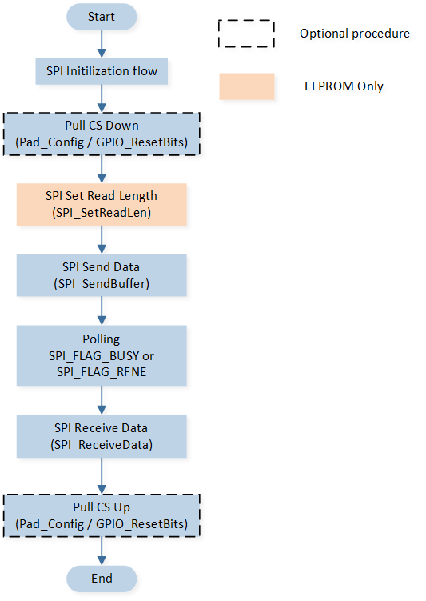

Polling
This sample demonstrates communication with external flash using the SPI polling mode.
In the sample, communication is conducted using the polling method, employing both full-duplex mode and EEPROM mode to perform data reading, erasing, and writing operations on the external flash.
The sample uses W25Q128 as the external flash to communicate with SPI. For an introduction to this hardware, see Hardware Introduction.
Users can select the SPI communication mode through macro configuration, choose whether to use software to control the CS line communication, modify pin settings, and other parameters. For specific macro configurations, see Configurations.
Note
The purpose of using software to control the CS line is to ensure that SPI does not experience data flow interruption during transmission. If a Tx underflow occurs during SPI transmission, it may cause the CS line to be pulled high, leading to communication issues. Using software control for the CS line ensures that the CS line will not be pulled high until the current communication is complete, ensuring the integrity of the communication.
Requirements
For requirements, please refer to the Requirements.
Wiring
EVB is connected to W25Q128 module: connect P4_0(SCK) to CLK, P4_1(MISO) to DO, P4_2(MOSI) to DI, P4_3(CS) to CS#.
Note
For module description of W25Q128, please refer to W25Q128 hardware introduction
Configurations
The following macro can be configured to modify whether to use software control for the CS line.
#define SPI_CONFIG_GPIO_SIM_CS 1 /*< Set this macro to 1 to enable software control CS. */
The following macro can be configured to modify the SPI communication mode to full-duplex or EEPROM mode.
#define SPI_MODE_FULLDUPLEX 0 #define SPI_MODE_EEPROM 3 #define SPI_MODE SPI_MODE_FULLDUPLEX /*< Set this macro to change the SPI transfer mode. */
The following macro can be configured to modify the pin definitions.
#define SPI_SCK_PIN P4_0 #define SPI_MISO_PIN P4_1 #define SPI_MOSI_PIN P4_2 #define SPI_CS_PIN P4_3
Building and Downloading
For building and downloading, please refer to the Building and Downloading.
Experimental Verification
When the IC resets, observe the following log within the Debug Analyzer.
Start spi polling test!
SPI transfer mode configuration:
If
SPI_MODEis configured asSPI_MODE_FULLDUPLEX, print the following logSPI is set to FullDuplex Mode!
If
SPI_MODEis configured asSPI_MODE_EEPROM, print the following logSPI is set to EEPROM Mode!
Read external flash ID.
Read DEVICE_ID, the first three bytes are dummy read, the last byte is DEVICE_ID.
flash id = 000000ff flash id = 000000ff flash id = 000000ff flash id = 00000017
Read MF_DEVICE_ID, the first three bytes are dummy read, the last two bytes are DEVICE_ID.
flash id = 000000ff flash id = 000000ff flash id = 000000ff flash id = 000000ef flash id = 00000017
Read JEDEC_ID.
flash id = 000000ef flash id = 00000040 flash id = 00000018
Erase the data at the specified address in the Flash, and read the erased data (all FF).
spi_demo: spi_flash_sector_erase done spi_demo: after erase read_data[0] = 0x000000ff ... spi_demo: after erase read_data[99] = 0x000000ff
Write data at the specified address in the Flash, and then read the data.
In Fullduplex mode, since four bytes of data are sent, the first four bytes of the received data are FF (invalid data), and the fifth byte onwards is valid data.
spi_demo: after write read_data[0] = 0x000000ff spi_demo: after write read_data[1] = 0x000000ff spi_demo: after write read_data[2] = 0x000000ff spi_demo: after write read_data[3] = 0x000000ff spi_demo: after write read_data[4] = 0x0000000a ... spi_demo: after write read_data[99] = 0x00000069
In EEPROM mode, data is not received when it is sent, so all data received is valid information.
spi_demo: after write read_data[0] = 0x0000000a spi_demo: after write read_data[1] = 0x0000000b ... spi_demo: after write read_data[99] = 0x0000006d
Code Overview
This section introduces the code and process description for initialization and corresponding function implementation in the sample.
Source Code Directory
The directory for project file and source code are as follows:
Project directory:
sdk\samples\peripheral\spi\polling\projSource code directory:
sdk\samples\peripheral\spi\polling\src
Initialization
The initialization flow for peripherals can refer to Initialization Flow in General Introduction.
Call
Pad_Config()andPinmux_Config()to configure the PAD and PINMUX of the corresponding pins.void board_spi_init(void) { Pad_Config(SPI_SCK_PIN, PAD_PINMUX_MODE, PAD_IS_PWRON, PAD_PULL_UP, PAD_OUT_ENABLE, PAD_OUT_HIGH); Pad_Config(SPI_MOSI_PIN, PAD_PINMUX_MODE, PAD_IS_PWRON, PAD_PULL_UP, PAD_OUT_ENABLE, PAD_OUT_HIGH); Pad_Config(SPI_MISO_PIN, PAD_PINMUX_MODE, PAD_IS_PWRON, PAD_PULL_UP, PAD_OUT_ENABLE, PAD_OUT_HIGH); Pad_Config(SPI_CS_PIN, PAD_PINMUX_MODE, PAD_IS_PWRON, PAD_PULL_UP, PAD_OUT_ENABLE, PAD_OUT_HIGH); Pinmux_Deinit(SPI_SCK_PIN); Pinmux_Deinit(SPI_MOSI_PIN); Pinmux_Deinit(SPI_MISO_PIN); Pinmux_Deinit(SPI_CS_PIN); Pinmux_Config(SPI_SCK_PIN, SPI_CLK_MASTER); Pinmux_Config(SPI_MOSI_PIN, SPI_MO_MASTER); Pinmux_Config(SPI_MISO_PIN, SPI_MI_MASTER); #if (SPI_CONFIG_GPIO_SIM_CS == 1) Pinmux_Config(SPI_CS_PIN, DWGPIO); #else Pinmux_Config(SPI_CS_PIN, SPI_CSN_0_MASTER); #endif }
Call
RCC_PeriphClockCmd()to enable the SPI clock.Initialize the SPI peripheral:
Define the
SPI_InitTypeDeftypeSPI_InitStruct, and callSPI_StructInit()to pre-fillSPI_InitStructwith default values.Modify the
SPI_InitStructparameters as needed. The SPI initialization parameter configuration is shown in the table below.Call
SPI_Init()to initialize the SPI peripheral.
SPI Hardware Parameters |
Setting in the |
SPI |
|---|---|---|
SPI Transfer Mode |
|
|
SPI Data Size |
||
Clock Mode - CPOL |
||
Clock Mode - CPHA |
||
Clock Prescaler |
20 |
|
Frame Format |
Call
SPI_Cmd()to enable SPI peripheral.
Functional Implementation
The flow of SPI communication in polling mode is shown in the diagram:
{kind=link}

SPI polling mode flow
According to the hardware information and communication protocol of W25Q128, the length and content of data that SPI needs to send vary during different operations. Additionally, the logic for reading and sending differs in various SPI communication modes.
Taking read external flash ID information as an example, the program needs to separately read external flash DEVICE_ID / MF_DEVICE_ID / JEDEC_ID information.
Prepare the data content to be sent. Modify the first byte of the data to be sent according to the different instruction and the required data length based on the type of ID to be read.
If the macro
SPI_MODEis configured asSPI_MODE_EEPROM:Before sending data, call
SPI_SetReadLen()to set the data length to be read.Since the send and receive logic in EEPROM communication mode are conducted separately, after setting the receive length, only call
SPI_SendBuffer()to send a one-byte instruction data, and subsequently callSPI_ReceiveData()function in a loop for data reception.
If the macro
SPI_MODEis configured asSPI_MODE_FULLDUPLEX:Call
SPI_SendBuffer()to send data. As full-duplex mode communication involves simultaneous sending and receiving, in addition to the instruction data, you need to send the number of bytes required by the receive logic to maintain the continuous SCK signal.After sending data, call
SPI_ReceiveData()to read the data replied from the device side. In full-duplex mode, the first byte read corresponds to invalid data replying to the sent instruction byte, so it can be omitted from storage in the array.
If the macro
SPI_CONFIG_GPIO_SIM_CSis configured as1, then before and after each communication, callGPIO_ResetBits()andGPIO_SetBits()to respectively pull down and pull up the CS line.
void spi_flash_read_id(Flash_ID_Type vFlashIdType, uint8_t *pFlashId) { #if (SPI_CONFIG_GPIO_SIM_CS == 1) GPIO_ResetBits(GPIO_GetPort(SPI_CS_PIN), GPIO_GetPin(SPI_CS_PIN)); #endif uint8_t send_buf[4] = {SPI_FLASH_JEDEC_ID, 0, 0, 0}; uint8_t recv_len = 3; switch (vFlashIdType) { ... } #if (SPI_MODE_EEPROM == SPI_MODE) SPI_SetReadLen(FLASH_SPI, recv_len); SPI_SendBuffer(FLASH_SPI, send_buf, 1); #elif (SPI_MODE_FULLDUPLEX == SPI_MODE) SPI_SendBuffer(FLASH_SPI, send_buf, recv_len + 1); while (SPI_GetFlagState(FLASH_SPI, SPI_FLAG_RFNE) == RESET){} SPI_ReceiveData(FLASH_SPI);//dummy read data #endif *pFlashId++ = recv_len; uint8_t idx = 1; while (recv_len--) { while (RESET == SPI_GetFlagState(FLASH_SPI, SPI_FLAG_RFNE)){} *pFlashId++ = SPI_ReceiveData(FLASH_SPI); } #if (SPI_CONFIG_GPIO_SIM_CS == 1) GPIO_SetBits(GPIO_GetPort(SPI_CS_PIN), GPIO_GetPin(SPI_CS_PIN)); #endif }
During a write operation, under this communication logic, only data needs to be sent without receiving data. At this time, the EEPROM mode cannot support this scenario, so it is necessary to call
SPI_ChangeDirection()to switch the communication mode to Tx Only mode for sending data. After the data is sent, callSPI_ChangeDirection()again to switch the mode back to EEPROM mode.SPI_ChangeDirection(FLASH_SPI, SPI_Direction_TxOnly); SPI_SendBuffer(FLASH_SPI, send_buf, 4); while (SPI_GetFlagState(FLASH_SPI, SPI_FLAG_BUSY) == SET){} SPI_ChangeDirection(FLASH_SPI, SPI_Direction_EEPROM); ...
In the main function, call
spi_flash_read_idto read the ID information of the external flash. Callspi_flash_sector_eraseto erase the data at the specified address. After erasing, callspi_flash_readto read the data at the corresponding address to check if the erasure was successful. Callspi_flash_page_writeto write data to the specified address, and after writing, read the data at that address again to check if the write was successful.void spi_demo(void) { ... while (flash_id_type < 3) { spi_flash_read_id((Flash_ID_Type)flash_id_type, flash_id); ... flash_id_type++; memset(flash_id, 0, sizeof(flash_id)); } spi_flash_sector_erase(0x001000); spi_flash_read(SPI_FLASH_FAST_READ, 0x001000, read_data, 105); ... spi_flash_page_write(0x001000, write_data, 100); spi_flash_read(SPI_FLASH_FAST_READ, 0x001000, read_data, 105); ... }
See Also
Please refer to the relevant API Reference: